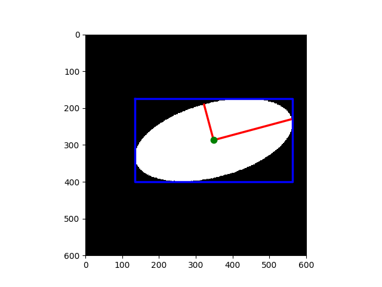

Note
Click here to download the full example code
This example shows how to measure properties of labelled image regions.
import math
import matplotlib.pyplot as plt
import numpy as np
from skimage.draw import ellipse
from skimage.measure import label, regionprops
from skimage.transform import rotate
image = np.zeros((600, 600))
rr, cc = ellipse(300, 350, 100, 220)
image[rr, cc] = 1
image = rotate(image, angle=15, order=0)
label_img = label(image)
regions = regionprops(label_img)
fig, ax = plt.subplots()
ax.imshow(image, cmap=plt.cm.gray)
for props in regions:
y0, x0 = props.centroid
orientation = props.orientation
x1 = x0 + math.cos(orientation) * 0.5 * props.major_axis_length
y1 = y0 - math.sin(orientation) * 0.5 * props.major_axis_length
x2 = x0 - math.sin(orientation) * 0.5 * props.minor_axis_length
y2 = y0 - math.cos(orientation) * 0.5 * props.minor_axis_length
ax.plot((x0, x1), (y0, y1), '-r', linewidth=2.5)
ax.plot((x0, x2), (y0, y2), '-r', linewidth=2.5)
ax.plot(x0, y0, '.g', markersize=15)
minr, minc, maxr, maxc = props.bbox
bx = (minc, maxc, maxc, minc, minc)
by = (minr, minr, maxr, maxr, minr)
ax.plot(bx, by, '-b', linewidth=2.5)
ax.axis((0, 600, 600, 0))
plt.show()
Total running time of the script: ( 0 minutes 0.037 seconds)
 Source
Source